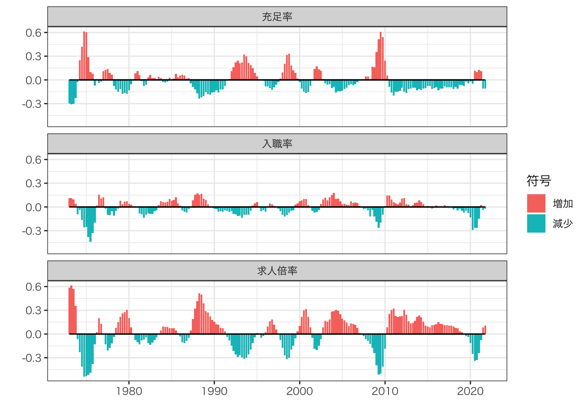

Chapter 3 厚生分析
- 1963年から2020年までの年次データを用いて、厚生変化を記述する
3.1 方法
Kawata and Sato (2021) の手法を用いて、失業者の厚生変化を記述する
標準的なDiamond-Mortencen-Pissarides型サーチモデル(Rogerson, Shimer, and Wright 2005)に準じて、以下の4条件式を仮定する
- 失業者の価値観数
\[rU_i=b+\dot{U}_i+\underbrace{\Delta_i}_{capital\ gain\ from\ search\ activity}\]
\[\Delta_i = \sum_j\frac{m_{ij}}{u_i}\times (W_{ij}-U_i)\]
- 求人の価値観数
\[rV_j=k+\dot{V}_j+\sum_{i}\frac{m_{ij}}{v_j}\times (J_{ij}-V_j)\]
- 自由参入条件
\[V_j=\dot{V}_j=0\]
- ナッシュ交渉
\[(1-\beta)(W_{ij}-U_i)=\beta(J_{ij}-V_j)\]
- 以上の4条件からcapital gain from seach activityは以下のよう
\[E[\Delta_i]=\sum u_i\Delta_i=\frac{\beta k}{1-\beta}\times\frac{\sum_{ij}m_{ij}}{\sum_i u_i}\times \frac{\sum_{j}v_j}{\sum_{ij}m_{ij}}\]
3.2 Rコード
col.label <-
c("year",
"1",
"2",
"3",
"4",
"5",
"6",
"7",
"8",
"9",
"10",
"11",
"12",
"type",
"group")
select.raw <- 14:63
select.column <- c(1,3:14)
raw.vacancy.full <-
read_excel("data/第6表.xlsx",
sheet = "第６表ー２（パート除く）") %>%
.[select.raw,select.column] %>%
mutate(type = "求人",
group = "フルタイム")
colnames(raw.vacancy.full) <- col.label
raw.seeker.full <-
read_excel("data/第7表.xlsx",
sheet = "第７表ー２（パート除く）") %>%
.[select.raw,select.column] %>%
mutate(type = "求職",
group = "フルタイム")
colnames(raw.seeker.full) <- col.label
raw.hir.full <-
read_excel("data/第8表.xlsx",
sheet = "第８表ー２（パート除く）") %>%
.[select.raw,select.column] %>%
mutate(type = "新規就職",
group = "フルタイム")
colnames(raw.hir.full) <- col.label
raw.vacancy.part <-
read_excel("data/第6表.xlsx",
sheet = "第６表ー３（パート）") %>%
.[select.raw,select.column] %>%
mutate(type = "求人",
group = "パートタイム")
colnames(raw.vacancy.part) <- col.label
raw.seeker.part <-
read_excel("data/第7表.xlsx",
sheet = "第７表ー３（パート）") %>%
.[select.raw,select.column] %>%
mutate(type = "求職",
group = "パートタイム")
colnames(raw.seeker.part) <- col.label
raw.hir.part <-
read_excel("data/第8表.xlsx",
sheet = "第８表ー３（パート）") %>%
.[select.raw,select.column] %>%
mutate(type = "新規就職",
group = "パートタイム")
colnames(raw.hir.part) <- col.label
df <-
rbind(raw.hir.full,
raw.hir.part,
raw.vacancy.full,
raw.vacancy.part,
raw.seeker.full,
raw.seeker.part
) |>
pivot_longer(cols = 2:13,
names_to = "month",
values_to = "n") |>
mutate(n = n |> as.numeric(),
year = year |> str_sub(1,4) |> as.numeric(),
month = month |> as.numeric(),
quaterly = month |> cut(c(0,3,6,9,12), labels = c(1,2,3,4)),
date = yq(str_c(year,quaterly,sep = ":Q"))
) |>
group_by(date,type) |>
mutate(n = n |> sum()) |>
ungroup() |>
distinct(year,quaterly,date,type,n) |>
spread(key = type, value = n) |>
group_by(quaterly) |>
mutate(入職率 = log(新規就職/求職) - log(lag(新規就職/求職)),
マッチングの余剰 = log(lag(新規就職/求人)) - log(新規就職/求人),
総余剰 = log(求人/求職) - log(lag(求人/求職))
) |>
select(-求職,
-求人,
-新規就職) |>
pivot_longer(cols = c(4:6),
names_to = "type",
values_to = "N") |>
na.omit()
fig <-
df |>
ggplot(aes(x = date,
y = N)
) +
geom_line() +
geom_point() +
geom_hline(yintercept = 0) +
facet_wrap(~type,
ncol = 1) +
ylab("") +
xlab("") +
theme_bw()3.3 結果

References
Kawata, Keisuke, and Yasuhiro Sato. 2021. “A First Aid Kit to Assess Welfare Impacts.” Economics Letters, 109928.
Rogerson, Richard, Robert Shimer, and Randall Wright. 2005. “Search-Theoretic Models of the Labor Market: A Survey.” Journal of Economic Literature 43 (4): 959–88.